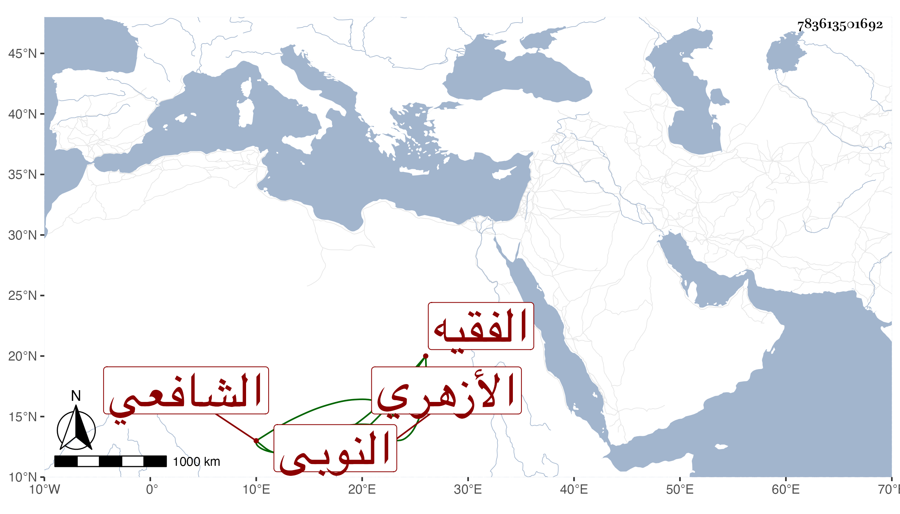

0902Sakhawi.DawLamic.ITO20230111-ara1.EIS1600.783613501692
Biography ID: 783613501692
750
محمد بن محمد بن محمد بن محمد بن محمد بن محمد بن محمد بن محمد النجم النوبي ثم الأزهري الشافعي الفقيه ويعرف بالبديوي . مات في جمادى الأولى سنة تسع وسبعين وصلي عليه بجامع الحاكم وقد قارب الثمانين أو جازها بيسير وكان قد حفظ المنهاج والألفية والشاطبيتين وعرض على جماعة واشتغل يسيرا وقرأ القراآت على الشهاب بن هاشم رفيقا لابن أسد وكان ذاكرا لها مستحضر للشاطبية ولأكثر كتبه إلى آخر وقت وتصدى لتعليم الأبناء دهرا وقرأ عليه جمع حافل لم ينبل منهم كبير أحد وكان ساكنا من صوفية البيبرسية والصلاحية رحمه الله وإيانا .
